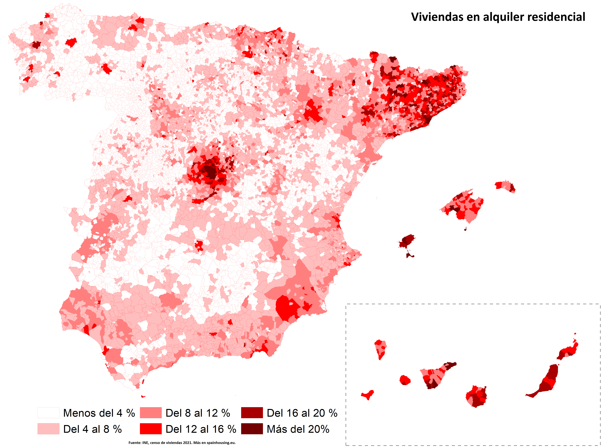
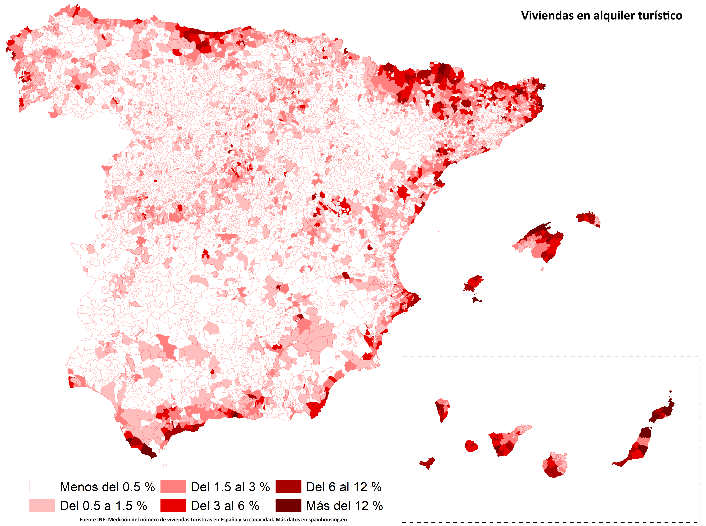

↑ Evolution of rental prices and housing prices according to both Idealista and the INE, Spain: base 100 = 2015.
The INE rental prices are an experimental indicator. For rental prices, Idealista data offers greater reliability since it is the reference marketplace in Spain for rental-seeking purposes.
↑ Evolution of rental prices and housing prices according to Idealista, Spain.
The top numbers inside the grey squares represent the ratio between both values. For example, in 2020, the monthly rental price represented 64% of the price of buying a square meter.
Residential rental

↑ Distribution of residential rental, Spain: the values represent the percentage of residential rental homes in the municipality relative to the total number of existing homes in the municipality.
Vacation rental

↑ Distribution of vacation rental, Spain: the values represent the percentage of vacation rental homes in the municipality relative to the total number of existing homes in the municipality.